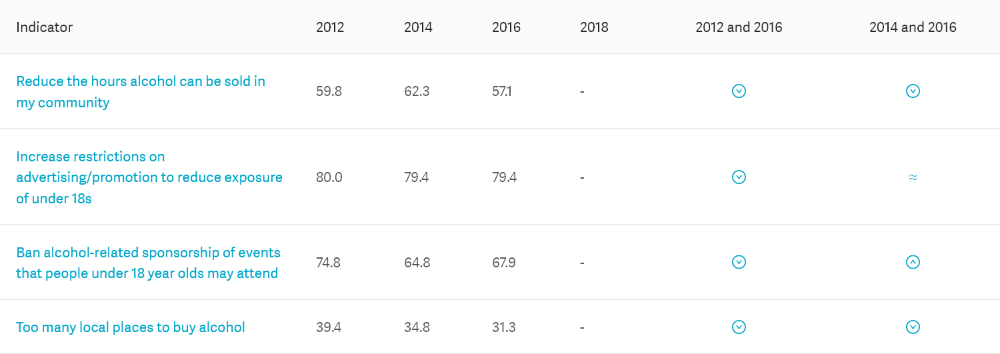

Prevalence for Alcohol attitudes
This table gives the percentage of the population affected (that is, the unadjusted prevalence in the specified population). Click on an indicator to find out more about it.
Group: Total

Source: Health and Lifestyles Survey
- Dashes indicate the data is not available.
- For Total response this is due to the question/s not being asked in that survey wave.
- For specific ethnicity totals, it may be due to the question not being asked or due to small sample size.